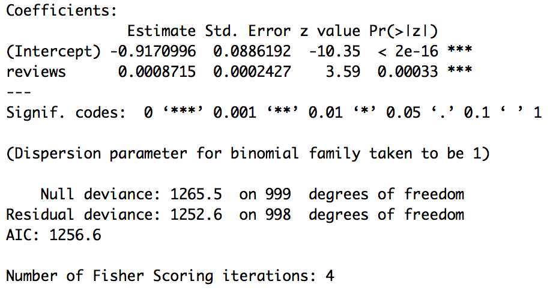

I used the following R code to clean and run a logistic regression on the data.
expedia <- read.csv("~/Downloads/search_trans.csv")
View(expedia)
# rename columns
promo <- expedia[,31]
reviews <- expedia[,29]
country <- expedia[,1]
# creat new dataframe with just the columns i need
expedia2 <- data.frame(promo, reviews, country)
# turn reviews into a numeric value
expedia2$reviews <- as.numeric(levels(reviews))[reviews]
# clean data by removing \N and blank values from both columns
expediaclean <- subset(expedia2, promo == "Y" | promo == "N")
expediaclean1 <- subset(expediaclean, country == "Manhattan")
# remove null values from reviews
expediaclean2 <- subset(expediaclean1, reviews >= 0)
View(expediaclean2)
# sample 1000 or else the model won't run
expediasample <- expediaclean2[sample(nrow(expediaclean2), 1000), ]
View(expediasample)
# run logistic regression
summary(glm(promo ~ reviews, data = expediasample, family = "binomial")) The logistical regression equation generated is: Odds_promotion = e^-.917 * e^(.00087*reviews)
Interpretation of the Model:
e^-.917 is the odds ratio of being a promoted hotel for each additional review for the hotel.
Odds if there are 100 reviews: e^-.917 * e^(.00087100) = 0.4360493
Odds if there are 101 reviews: e^-.917 e^(.00087*101) = 0.4364288
exp(0.4364288 - 0.4360493) = 1.00038
This means that for each additional review, we can expect to about .038% increase in the odds of being a promoted hotel. This increase does not depend on the value that reviews is held at.